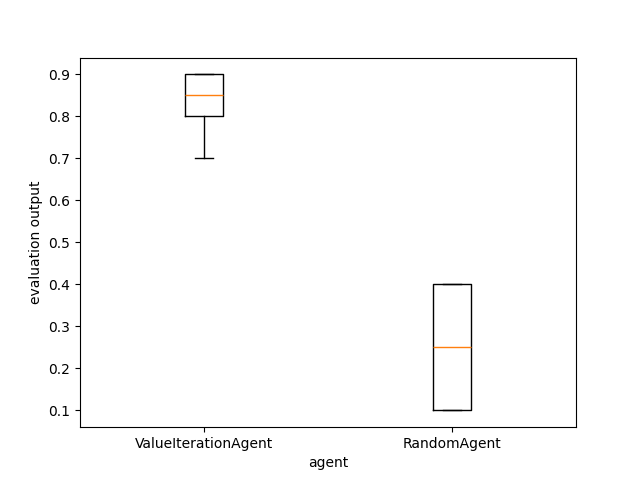

Note
Go to the end to download the full example code
A demo of Experiment Manager¶
In this example, we use the ExperimentManager.
First, we initialize a grid world environment with finite state space and actions.
A grid world is a simple environment with finite states and actions, on which
we can test simple algorithms. The reward function can be accessed by: env.R[state, action], while the transitions by: env.P[state, action, next_state].
Then, we implement a value iteration algorithm for the action values:
\[Q(s, a) \leftarrow \sum_{s^{\prime}} p(s'|a, s)\left( R(s, a)+\gamma \max _{a^{\prime}} Q(s^{\prime}, a^{\prime}) \right).\]
Finally, we compare with a baseline provided by a random policy using the ExperimentManager class which trains, evaluates and gathers statistics about the two agents.
[INFO] 08:26: ... trained!
[INFO] 08:26: Saved ExperimentManager(ValueIterationAgent) using pickle.
[INFO] 08:26: The ExperimentManager was saved in : 'rlberry_data/temp/manager_data/ValueIterationAgent_2024-10-25_08-26-39_a7819b70/manager_obj.pickle'
[INFO] 08:26: Running ExperimentManager fit() for RandomAgent with n_fit = 1 and max_workers = None.
[INFO] 08:26: ... trained!
[INFO] 08:26: Saved ExperimentManager(RandomAgent) using pickle.
[INFO] 08:26: The ExperimentManager was saved in : 'rlberry_data/temp/manager_data/RandomAgent_2024-10-25_08-26-40_11074cf2/manager_obj.pickle'
[INFO] 08:26: Evaluating ValueIterationAgent...
[INFO] 08:26: Computing 10 evaluations.
[INFO] Evaluation:.......... Evaluation finished
[INFO] 08:26: Evaluating RandomAgent...
[INFO] 08:26: Computing 10 evaluations.
[INFO] Evaluation:.......... Evaluation finished
from rlberry_research.envs import GridWorld
# Create a grid world environment and an agent with a value iteration policy
env_ctor = GridWorld
env_kwargs = dict(
nrows=3,
ncols=10,
reward_at={(1, 1): 0.1, (2, 9): 1.0},
walls=((1, 4), (2, 4), (1, 5)),
success_probability=0.9,
)
env = env_ctor(**env_kwargs)
import numpy as np
from rlberry.agents import AgentWithSimplePolicy
class ValueIterationAgent(AgentWithSimplePolicy):
name = "ValueIterationAgent"
def __init__(
self, env, gamma=0.99, epsilon=1e-5, **kwargs
): # it's important to put **kwargs to ensure compatibility with the base class
"""
gamma: discount factor
episilon: precision of value iteration
"""
AgentWithSimplePolicy.__init__(
self, env, **kwargs
) # self.env is initialized in the base class
self.gamma = gamma
self.epsilon = epsilon
self.Q = None # Q function to be computed in fit()
def fit(self, budget=None, **kwargs):
"""
Run value iteration.
"""
S, A = env.observation_space.n, env.action_space.n
Q = np.zeros((S, A))
V = np.zeros(S)
while True:
TQ = np.zeros((S, A))
for ss in range(S):
for aa in range(A):
TQ[ss, aa] = env.R[ss, aa] + self.gamma * env.P[ss, aa, :].dot(V)
V = TQ.max(axis=1)
if np.abs(TQ - Q).max() < self.epsilon:
break
Q = TQ
self.Q = Q
def policy(self, observation):
return self.Q[observation, :].argmax()
@classmethod
def sample_parameters(cls, trial):
"""
Sample hyperparameters for hyperparam optimization using Optuna (https://optuna.org/)
"""
gamma = trial.suggest_categorical("gamma", [0.1, 0.25, 0.5, 0.75, 0.99])
return {"gamma": gamma}
# Create random agent as a baseline
class RandomAgent(AgentWithSimplePolicy):
name = "RandomAgent"
def __init__(self, env, **kwargs):
AgentWithSimplePolicy.__init__(self, env, **kwargs)
def fit(self, budget=None, **kwargs):
pass
def policy(self, observation):
return self.env.action_space.sample()
from rlberry.manager import ExperimentManager, evaluate_agents
# Define parameters
vi_params = {"gamma": 0.1, "epsilon": 1e-3}
# Create ExperimentManager to fit 4 agents using 1 job
vi_stats = ExperimentManager(
ValueIterationAgent,
(env_ctor, env_kwargs),
fit_budget=0,
eval_kwargs=dict(eval_horizon=20),
init_kwargs=vi_params,
n_fit=4,
)
vi_stats.fit()
# Create ExperimentManager for baseline
baseline_stats = ExperimentManager(
RandomAgent,
(env_ctor, env_kwargs),
fit_budget=0,
eval_kwargs=dict(eval_horizon=20),
n_fit=1,
)
baseline_stats.fit()
# Compare policies using 10 Monte Carlo simulations
output = evaluate_agents([vi_stats, baseline_stats], n_simulations=10)
Total running time of the script: (0 minutes 1.124 seconds)